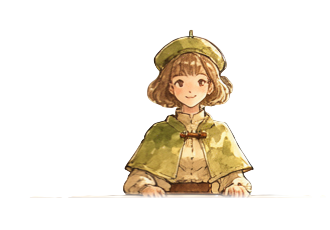

拠点の木漏れ日を別の層にした試作（四季・時刻）


時刻：夏だけ、朝（7時）・昼（12時）・夕方（17時）の3枚を描き分け、そのあいだを時刻に合わせて移り変わらせています。光の形そのものが変わります。ほかの季節はまだ昼の1枚だけです。
土台は、元の絵から Krea 3 の部分編集で床と壁の木漏れ日を消したもの。光の層は、元の絵と土台の差から取り出した明るい斑点だけで、足し算で重ねてゆっくりずらしています。落ち葉と雪は絵ではなくコードで描いた粒です。受付嬢は切り抜いた層で、透明度だけを変えて現れます。